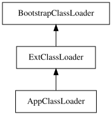
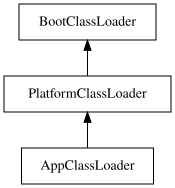

友情支持
如果您觉得这个笔记对您有所帮助，看在D瓜哥码这么多字的辛苦上，请友情支持一下，D瓜哥感激不尽，😜
|
|


有些打赏的朋友希望可以加个好友，欢迎关注D 瓜哥的微信公众号，这样就可以通过公众号的回复直接给我发信息。

公众号的微信号是: jikerizhi。因为众所周知的原因，有时图片加载不出来。 如果图片加载不出来可以直接通过搜索微信号来查找我的公众号。 |
71. ClassLoader
虽然对 ClassLoader 的双亲委派流程比较了解，但是一直没有仔细专研过代码实现。今天翻看代码，代码写的简单明了：
1
2
3
4
5
6
7
8
9
10
11
12
13
14
15
16
17
18
19
20
21
22
23
24
25
26
27
28
29
30
31
32
33
34
35
36
37
38
39
40
41
42
43
44
45
46
47
48
49
50
51
52
53
54
55
56
57
58
59
60
61
62
63
64
65
66
67
68
69
70
71
72
73
74
75
76
77
78
79
80
81
82
83
84
85
86
87
88
89
90
91
92
93
94
95
96
97
98
99
100
101
/**
* Loads the class with the specified <a href="#binary-name">binary name</a>. The
* default implementation of this method searches for classes in the
* following order:
*
* <ol>
*
* <li><p> Invoke {@link #findLoadedClass(String)} to check if the class
* has already been loaded. </p></li>
*
* <li><p> Invoke the {@link #loadClass(String) loadClass} method
* on the parent class loader. If the parent is {@code null} the class
* loader built into the virtual machine is used, instead. </p></li>
*
* <li><p> Invoke the {@link #findClass(String)} method to find the
* class. </p></li>
*
* </ol>
*
* <p> If the class was found using the above steps, and the
* {@code resolve} flag is true, this method will then invoke the {@link
* #resolveClass(Class)} method on the resulting {@code Class} object.
*
* <p> Subclasses of {@code ClassLoader} are encouraged to override {@link
* #findClass(String)}, rather than this method. </p>
*
* <p> Unless overridden, this method synchronizes on the result of
* {@link #getClassLoadingLock getClassLoadingLock} method
* during the entire class loading process.
*
* @param name
* The <a href="#binary-name">binary name</a> of the class
*
* @param resolve
* If {@code true} then resolve the class
*
* @return The resulting {@code Class} object
*
* @throws ClassNotFoundException
* If the class could not be found
*/
protected Class<?> loadClass(String name, boolean resolve)
throws ClassNotFoundException
{
synchronized (getClassLoadingLock(name)) {
// First, check if the class has already been loaded
Class<?> c = findLoadedClass(name);
if (c == null) {
long t0 = System.nanoTime();
try {
if (parent != null) {
c = parent.loadClass(name, false);
} else {
c = findBootstrapClassOrNull(name);
}
} catch (ClassNotFoundException e) {
// ClassNotFoundException thrown if class not found
// from the non-null parent class loader
}
if (c == null) {
// If still not found, then invoke findClass in order
// to find the class.
long t1 = System.nanoTime();
c = findClass(name);
// this is the defining class loader; record the stats
PerfCounter.getParentDelegationTime().addTime(t1 - t0);
PerfCounter.getFindClassTime().addElapsedTimeFrom(t1);
PerfCounter.getFindClasses().increment();
}
}
if (resolve) {
resolveClass(c);
}
return c;
}
}
/**
* Finds the class with the specified <a href="#binary-name">binary name</a>.
* This method should be overridden by class loader implementations that
* follow the delegation model for loading classes, and will be invoked by
* the {@link #loadClass loadClass} method after checking the
* parent class loader for the requested class.
*
* @implSpec The default implementation throws {@code ClassNotFoundException}.
*
* @param name
* The <a href="#binary-name">binary name</a> of the class
*
* @return The resulting {@code Class} object
*
* @throws ClassNotFoundException
* If the class could not be found
*
* @since 1.2
*/
protected Class<?> findClass(String name) throws ClassNotFoundException {
throw new ClassNotFoundException(name);
}
如果自定义 ClassLoader，最简单的办法就是重载 Class<?> findClass(String name) 方法就可以了。或者为了避免双亲委托机制，可以自己定义一个类加载器，然后重写 loadClass() 即可。
1
2
3
4
5
6
7
8
9
10
11
12
13
14
15
16
17
18
19
20
21
22
23
24
25
26
27
28
29
30
31
32
33
34
35
36
37
38
39
40
41
42
43
44
45
46
47
48
49
50
51
52
53
54
55
56
57
58
59
60
61
62
63
64
65
66
67
68
69
70
71
72
73
package com.diguage.truman;
import org.junit.jupiter.api.Test;
import java.io.ByteArrayOutputStream;
import java.io.IOException;
import java.io.InputStream;
import java.lang.reflect.InvocationTargetException;
import java.net.URL;
import java.util.Objects;
/**
* @author D瓜哥, https://www.diguage.com/
* @since 2020-03-10 17:23
*/
public class ClassLoaderTest {
public static void main(String[] args) {
System.out.println("ClassLodarDemo's ClassLoader is " + ClassLoaderTest.class.getClassLoader());
System.out.println("The Parent of ClassLodarDemo's ClassLoader is " + ClassLoaderTest.class.getClassLoader().getParent());
System.out.println("The GrandParent of ClassLodarDemo's ClassLoader is " + ClassLoaderTest.class.getClassLoader().getParent().getParent());
}
@Test
public void test() throws ClassNotFoundException, NoSuchMethodException,
IllegalAccessException, InvocationTargetException,
InstantiationException {
DiguageClassLoader loader = new DiguageClassLoader();
// 如何识别内部类？
// 如何获取内部类的正确类名？
Class<?> clazz = loader.loadClass(
"com.diguage.truman.ClassLoaderTest.HelloWorld");
Object instance = clazz.getDeclaredConstructor().newInstance();
System.out.println(instance.toString());
}
public static class HelloWorld {
@Override
public String toString() {
return "Hello, https://www.diguage.com/";
}
}
public static class DiguageClassLoader extends ClassLoader {
@Override
protected Class<?> findClass(String name) throws ClassNotFoundException {
if (Objects.isNull(name)) {
throw new IllegalArgumentException("class name is null.");
}
String fileName = name.replaceAll("\\.", "/") + ".class";
int index = fileName.lastIndexOf("/");
fileName = fileName.substring(0, index) + "$"
+ fileName.substring(index + 1);
InputStream inputStream = getResourceAsStream(fileName);
ByteArrayOutputStream outputStream = new ByteArrayOutputStream();
try {
int size = 0;
byte[] bytes = new byte[1024];
while ((size = inputStream.read(bytes)) != -1) {
outputStream.write(bytes, 0, size);
}
} catch (IOException e) {
e.printStackTrace();
}
byte[] bytecodes = outputStream.toByteArray();
if (bytecodes.length == 0) {
throw new ClassNotFoundException(name);
}
int i = name.lastIndexOf(".");
String className = name.substring(0, i) + "$" + name.substring(i + 1);
return defineClass(className, bytecodes, 0, bytecodes.length);
}
}
}
-
jdk.internal.loader.ClassLoaders.PlatformClassLoader -
jdk.internal.loader.ClassLoaders.AppClassLoader

在 JDK 8 及以前，AppClassLoader 和 ExtClassLoader 这两个类都是 sun.misc.Launcher 中的内部类。 BootstrapClassLoader 是由 C++ 代码实现的。所以，不存在 Java 类定义。


在 JDK 9 以后，AppClassLoader，PlatformClassLoader 和 BootClassLoader 三个类都定义在 jdk.internal.loader.ClassLoaders 中。BootClassLoader 是由 Java 和 C++ 混合实现，所以有类的定义。
ClassLoader 提供的资源加载的方法中的核心方法是 ClassLoader#getResource(String name)，它是基于用户应用程序的 ClassPath 搜索资源，遵循"资源加载的双亲委派模型"，资源名称必须使用路径分隔符 / 去分隔目录，但是不能以 / 作为资源名的起始字符，其他几个方法都是基于此方法进行衍生，添加复数操作等其他操作。getResource(String name) 方法不会显示抛出异常，当资源搜索失败的时候，会返回 null。
-
如何识别内部类？
-
如何获取内部类的正确类名？